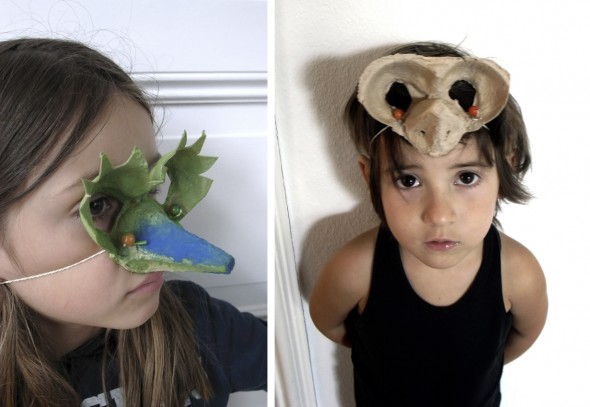

Cogemos piedras, las pintamos, y luego les pegamos unos ojos... ¡que familia más monstruosa! Monster 02
Painted stones with glued eyes... a monster family!
Monster 02
Bemalte Steine mit aufgeklebten Augen. Eine echte Moster- Familie.

Cogemos piedras, las pintamos, y luego les pegamos unos ojos... ¡que familia más monstruosa! Monster 02

Para hacer estos barquitos lo primero que tienes que hacer es cortar un tetrabrik en dos partes. Para el techo sólo necesitas alambre, papel cebolla y…
Leer más →
Con cartón de huevera podemos conseguir ojos de diferentes animales, como estos que parecen de pájaro. Para conseguirlo hemos usado cartón de huevera otra vez. Mask:…
Leer más →
Deja caer cera de una vela encendida en una bolsa o camisa, y después tinta la tela. Bag: Let the hot wax of a burning candle…
Leer más →
Primero hemos pintado con spray de color blanco las tapas, y luego hemos dibujado caras distintas. En la parte posterior hemos pegado un cartón e imanes.…
Leer más →
Juntando piedras de forma y tamaño diferentes puedes crear animales. Rock animals: Put different rocks together creating new forms, like animals. Steintiere: Lege Steine unterschiedlicher Formen…
Leer más →
Los manualidades de Hannah Aquí podéis ver un guarda lápices inventado por mi hija para poder subirlo al blog! Hannah´s crafts: Here you see a pencil…
Leer más →